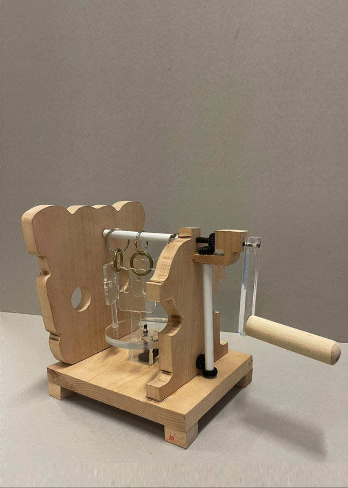
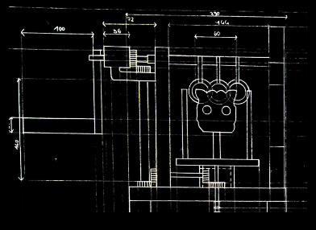
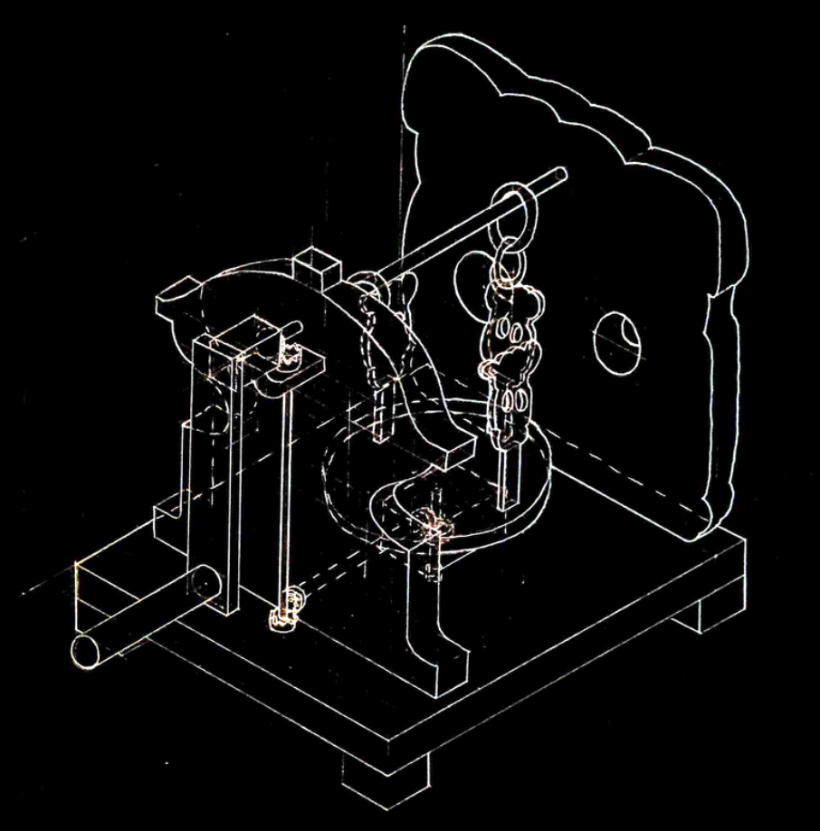
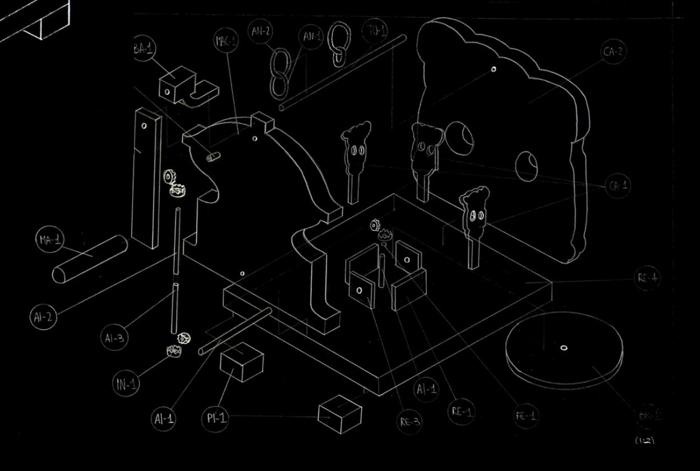

ZIR
THE TIME OF OBJECT'S MEMORY
(MET museum of habits and customs of Romagna)
(Experimentation on traditional objects through a creative and current reinterpretation)
During the 2021/2022 drawing workshop, we collaborated with MET Museum of Romagna for a project called "The Time of Object's Memory". The creative reinterpretation of traditional objects inspired me to design my children's toy called "Zir".
Zir was born from the inspiration of the traditional object called "caveja" and the coffee grinder. The game's mechanism is based on the functioning of the coffee grinder, while the shapes of the new object try to preserve the memory of those who inspired it. Sound and movement are elements that draw attention to the playful dimension of the experience.


